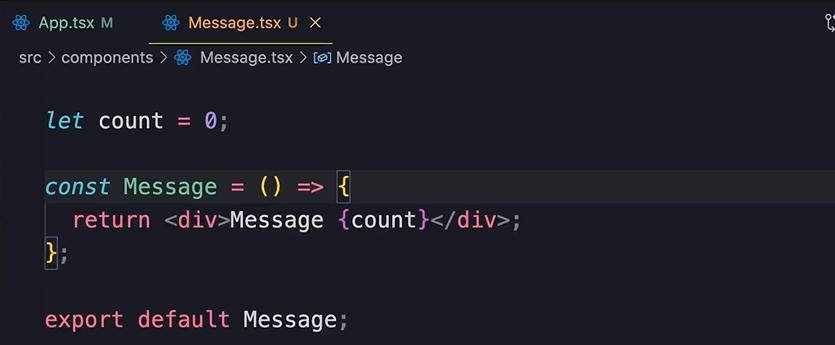

HOME
Keeping Components Pure
Purity
This is a fundamental concept in React.
In computer science a pure function is a function that given the same
input, it always returns the same result.
React was built around this concept. A component should always output
the same result if we give it the same props.
So if the props of a component haven't changed, React can skip
re-rendering that component.
Example of Pure Component
To keep components pure we should keep thier changes out of the render
phase.
Let's say we have this component...

Then we render it a few times...
We get this...
Example of Impure Component
However, if we go and change the value inside the function
component...
We get this now...
To avoid this we should not change any variable inside the component
that exist outside of it.
IMPORTANT NOTE
It's completly fine and normal to change a var declared inside a
component
Like if we move the count var into the component like this...
The component is pure again...